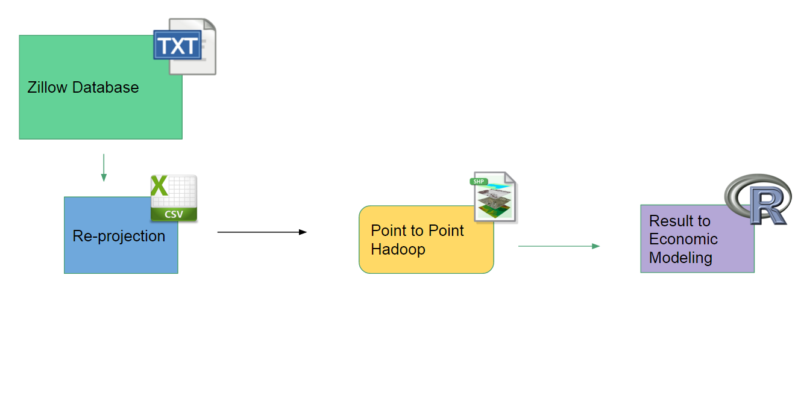
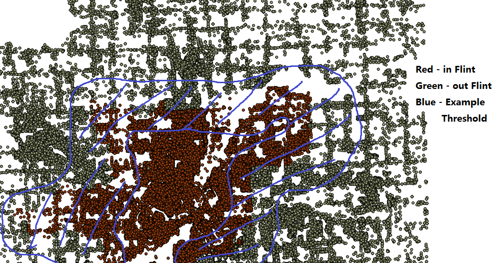

Zillow Flint Project¶
1. Overview:¶
Zillow:
Zillow is a famous real estate company who would like to share their real-estate data to all the researchers and analyzers. They provided all properties and transactions with their database, along with their online API service for house search. For this project, we are using the Zillow Database they provided to us as “.txt” format files. For more details, feel free to visit Zillow website: http://www.zillow.com/
Flint Water Crisis:
Flint Water Crisis is a drinking water contamination issue in Flint Michigan. It started in April 2014, after changing the water source from treated Detroit Water and Sewerage Department water. The most lethal mater in this case is the Lead, from aging pipes to leach into the water supply. In our research, we are trying to discover how much the issue effect on the housing price by comparing the similar houses with different water supply. In this way, we are able to find out how much money people are willing to buy for the safer water.
Roger Hadoop Parallel Computing:
Since the data involved in this project is really large, it is impossible for a regular computer to run some geographical operations. Luckily, our group is located near GIS (Geographic Information System) group for NCSA. For this project, we are closely associated with the GIS group and used their Hadoop system on the Roger Super Computer, details can be seen at: https://wiki.ncsa.illinois.edu/display/ROGER/ROGER+User+Guide
Hadoop System:
Hadoop System, also called Apache Hadoop, is an open source software framework system for distributed storage and distributed processing of very large data sets on computer clusters built from commodity hardware. The system can run large file operation in a very short time. Our Flint project benefits from this system for a huge speed improvements. For details on Hadoop System, visit: http://hadoop.apache.org/
2. Project Pipeline:¶
Zillow Database Section:
The Database is in format of “.txt” (for example Main.txt), and are located under shared drive with path project/Flint/stores/. They are divided into two databases, Zillow Assessment (ZAsmt folder) and Zillow Transaction (ZTrans).
The Zillow Assessment database is in folder “ZAsmt”. It includes information of each house information, such as FIPS, RowID, YearBuilt, etc. When we extracting house information, we generatlly are gathering data from this database. Frequently used table files: Main.txt, Building.txt, BuildingArea.txt.
The Zillow Transaction database is in folder “ZTrans”. It includes information related to the transactions of houses, such as: RecordingDates, TransID, etc. When we are going to have all the records of the transaction of the houses, we will need to get information from this database. Frequently used table files: Main.txt, PropertyInfo.txt
After we extract the information from two database, we will need to merge two database information. We will be using a field called ImportParcelID field to merge them together. The ImportParcelID field is located in ZTrans/PropertyInfo.txt and ZAsmt/Main.txt. (In order to merging the transactions, we will need to merge the ZTrans/PropertyInfo.txt and ZTrans/Main.txt).
Re-Projection:
After we extracted information from ZillowDatabase, we will have a result file with CSV format. But the location on Zillow Database are Longitude and Latitude, we will need to use QGIS to transform them into UTM (Universal Transverse Mercator coordinate system) with “EPSG-2898” to match the projection with the pipe test.
Later, for automatic usage, we will be using the ogr module in python to implement this projection step. Details see: https://pcjericks.github.io/py-gdalogr-cookbook/
GIS Calculation:
Next step we will need to do is find the houses that is close on the edge, in order solve that problem, we decided to use the point to point approach integrated with Hadoop System. Let’s restate our final goal, which is finding how much money people are willing to pay for avoiding the water crisis for Flint. Therefore, it is clear finding the houses/transactions that on the edge of Flint city on both inside of Flint and outside of Flint will be optimal. In order to find those houses, we will be using following steps:

- Divide the points set into two sets, one is inside of Flint, one is outside of Flint
- Find the nearest neighbor of all houses/transactions from outside of Flint to inside of Flint
- Find the nearest neighbor of all houses/transactions from inside of Flint to outside of Flint
- Create threshold to eliminate the houses/transactions that is too far away from Flint or too close to the Downtown of Flint.
For detailed guide for Hadoop usage, please go down for the “Hadoop Step by Step Guide”.
Using R Script for Economic Process:
Then the last step for the pipeline is to use R script to analyze the data into economic valuable tables, and be prepared for visualization, documentation on Latex, or any future usage on economic models.
3. Hadoop Step by Step Guide (Point-to-Point Operation):¶
- Uploading all the required files to the VM:
- using ssh enter the Roger VM (Virtual Machine)
- upload chicago_app.zip, unzip it into “chicago_app” folder
- upload the csv file contains houses/transactions in Flint, name it inFlint.csv
- upload the csv file contains houses/transactions outside of Flint, name it outFlint.csv
- upload the shapefile houses/transactions in Flint, name folder inFlint, and file inFlint.shp
- upload the shapefile contains houses/transactions outside of Flint, name folder outFlint, and file outFlint.shp
- upload move all files into a new directory folder for project
(p.s. If you are using the linx system, you can use “scp” command to upload file from your local machine into the VM, http://www.binarytides.com/linux-scp-command/)
- Uploading all the required files to the Hadoop:
When you logged into the Roger VM, you need enter to the Hadoop VM, type
ssh cg-hm08Use copyFromLocal command to get copy from Roger VM to Hadoop VM:
hdfs dfs -copyFromLocal [localFile] [HadoopPath]Eg.
hdfs dfs -copyFromLocal inFlint.csv FlintProject/Repeatedly upload both inFlint.csv and outFlint.csv into the hadoop VM
- Build the QuadTree:
- use command to build QuadTree for
- in Flint:
python app_chicago/buildTree_point.py inFlint/inFlint.shp quadTreeInFlint.txt- out Flint:
python app_chicago/buildTree_point.py outFlint/outFlint.shp quadTreeOutFlint.txt
- Change the quadTree file and Shapefile in
hdPinP_point.py
- use vim editor to edit
vim app_chicago/hdPinP_point.py- modify the #6 and #8 line into the associated file you want to process:
Eg. If you want to do “Find the nearest neighbor of all houses/transactions from outside of Flint to inside of Flint”, then you will need to use
../inFlint/inFlint.shpon #6 and../quadTreeInFlint.txtin #8.
- Run the Program on Hadoop:
- use
hdfs dfs -lsto check if the result file is exist. If exist, usehdfs dfs -rm -r [resultFolderName]to remove the exist result first. Hadoop will show error if the result folder is exist on formal run.- running the program on Hadoop with command:
Use:
nohup hadoop jar /usr/hdp/2.3.2.0-2602/hadoop-mapreduce/hadoop-streaming-2.7.1.2.3.2.0-2602.jar -files app_chicago -mapper "app_chicago/hdPinP_point.py" -input outFlint.csv -output out2inFlint.txt &If you are going to find all the points distance from outside to inside. Use
nohup hadoop jar /usr/hdp/2.3.2.0-2602/hadoop-mapreduce/hadoop-streaming-2.7.1.2.3.2.0-2602.jar -files app_chicago -mapper "app_chicago/hdPinP_point.py" -input inflint.csv -output in2outFlint.txt &If you are going to find all the points distance from inside to outside.
All the output will be in a file called
nohup.out.